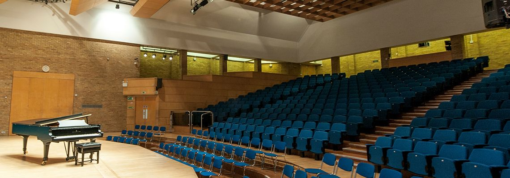

Conference Venue QCrypt 2017 will take place at West Road Concert Hall, University of Cambridge, Cambridge, UK Virtual tour of the venue  Venue location Tweet Share on Tumblr Pocket [`evernote` not found]